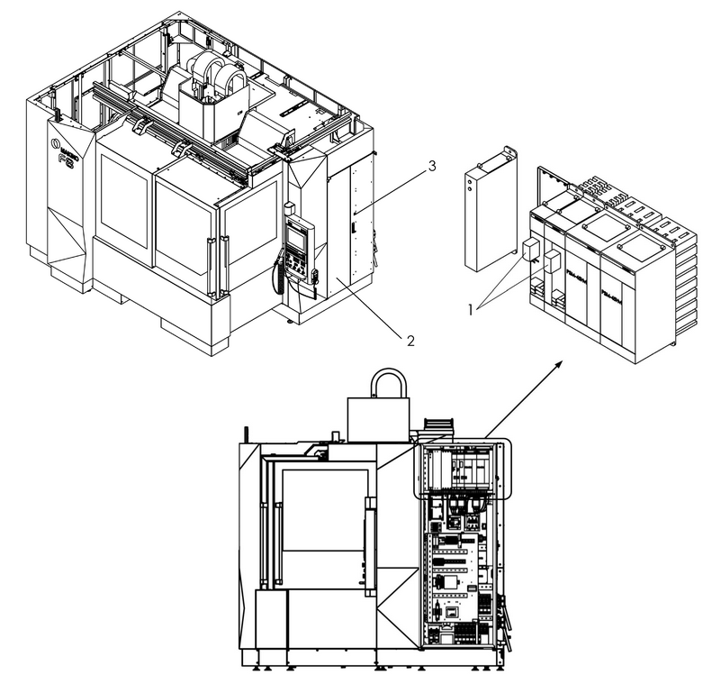

|
<< Click to Display Table of Contents >> Navigation: Chapter 2 Periodic Maintenance > Machine Controller > Replacing the Absolute Pulse Coder/Scale Batteries |
Maintenance period: Every 6000 Hours
|
WARNING |
•Turn ON the machine power supply, and confirm that all machine movements have stopped prior to performing the following procedures. •Do not replace the batteries with wet hands. Failure to observe this precaution may result in electrical shock. •Use the specified battery type only. If the wrong type of battery is used, the batteries could overheat, catch fire, or rupture. |
NOTICE |
•Perform this procedure while the machine controller power is ON. If the operation is performed while the controller power is turned OFF, the currently stored absolute position information will be lost. |
Required items
Name |
Order Number |
Model/Type |
Manufacturer |
Quantity |
|---|---|---|---|---|
6V Panasonic BR-2/3 GCT4A |
BR-2/3 GCT4A |
A06B-6114-K504 |
FANUC |
2 |
Procedure (Refer to Figure 12.2)
1)Turn ON the machine controller power.
2)Unlock MTC door interlock key [3].
3)Open the MTC [2] door.
4)Remove the battery covers [1] on the amplifier modules.
5)Remove the batteries by disconnecting the attached cable.
6)Insert new batteries and reconnect the cable.
7)Replace the battery covers [1].
8)Close the MTC [2] door.
9)Turn OFF the MTC door interlock key [3].
This completes replacement of the absolute pulse coder/scale batteries.

Figure 12.2 Replacement of Absolute Pulse Coder/Scale Batteries
No. |
Name |
No. |
Name |
1 |
Battery Cover |
3 |
Door Interlock Key |
2 |
MTC |
- |
- |